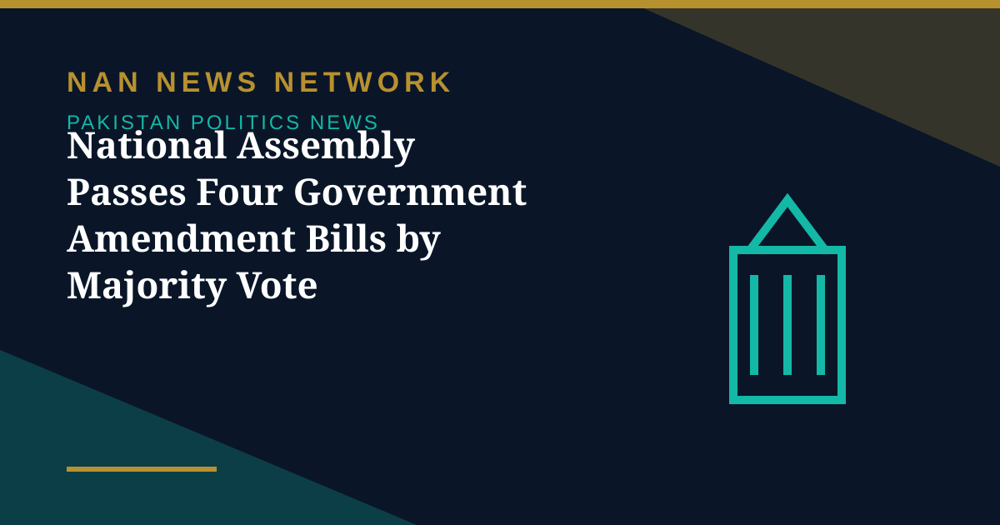

National Assembly Passes Four Government Amendment Bills by Majority Vote

The National Assembly on Friday passed four government bills by majority vote after clause-by-clause consideration, according to the Associated Press of Pakistan. The bills covered higher education, engineering education, textiles and the Rahmatul-Lil-Aalameen Authority.
The four bills
The bills passed were the Higher Education Commission (Amendment) Bill, 2026; the NFC Institute of Engineering and Technology Multan (Amendment) Bill, 2026; the National Textile University (Amendment) Bill, 2026; and the National Rahmatul-Lil-Aalameen Wa Khatamun Nabiyyin Authority (Amendment) Bill, 2026.
How they were passed
Each bill went through clause-by-clause consideration before being put to a vote, and all four were carried by majority vote. The passage adds to the House's legislative record for the current session, which has seen a mix of government business and procedural interruptions in recent days.
What happens next
Amendment bills of this kind typically move on to the Senate for consideration before they can become law. The education-related measures touch institutions that shape Pakistan's higher education and technical training landscape, while the textiles university bill concerns a sector that remains central to the country's export economy.
Further details of the amendments, including their specific provisions, will become clearer as the bills proceed through the remaining stages of the legislative process.
Sources: Associated Press of Pakistan via UrduPoint, October 30, 2026.
More on Pakistan Politics News
- Opposition Signals Willingness to Join Electoral Reforms Committee After PPP Outreach
- National Assembly Session Suspended After Speaker Finds House Lacks Quorum
- Pakistan Proposes Parliamentary Friendship Group With Turkmenistan
- Lahore High Court Judge Mohsin Akhtar Kayani Resigns, Citing Executive Grip on Judiciary
- Pakistan Says Afghan Firing Kills One in South Waziristan Border District
- Pakistan Marks Kashmir Black Day With Rallies Across the Country
- National Assembly Passes Seven Private Members' Bills, Sends Six to Committees
- Pakistan Strongly Condemns Houthi Missile Attacks Near Makkah and Madinah
- Pakistan, Saudi Arabia and Turkiye Reported to Hold Tehran Talks on De-escalation
- Pakistan LPG Shortage Worsens as Iran Border Crossings Close
- Pakistan Ends Machine-Readable Passports and Switches Fully to E-Passports
- Pakistan Calls for a Fairer Global Order at the United Nations